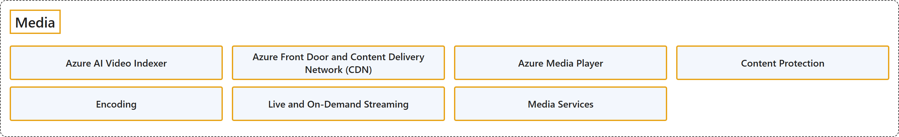

14. Media
Classification

Glossary
| Term | Definition | 中文翻译 | Source |
|---|---|---|---|
| Media 媒体 |
"videos, music, and photographs that are stored as particular types of file on a computer" | 以特定文件类型存储在计算机上的视频、音乐和照片。 | Cambridge University Press & Assessment, n.d., "media" noun (VIDEO/MUSIC FILES) |
| Azure AI Video Indexer Azure AI 视频索引器 |
"Azure AI Video Indexer is a comprehensive AI solution that enables organizations to extract deep insights from video (live and uploaded) and audio content." | Azure AI Video Indexer 是一个全面的 AI 解决方案，让组织可以从视频（直播和上传的）和音频内容中提取深入见解。 | Microsoft, 2026a, para. 1 |
| Azure Front Door and Content Delivery Network (CDN) Azure Front Door和内容分发网络（CDN） |
"Azure Front Door is an advanced content delivery network (CDN) for the cloud. It's designed to provide fast, reliable, and secure access to your applications' static and dynamic web content globally." | Azure Front Door 是面向云的高级内容分发网络（CDN）。它旨在为你的应用程序在全球范围内的静态和动态 Web 内容提供快速、可靠和安全的访问。 | Microsoft, 2026b, para. 2 |
| Azure Media Player Azure 媒体播放器 |
"Azure Media Player is a web video player that plays media content from Microsoft Azure Media Services on a wide variety of browsers and devices." | Azure Media Player 是一个 Web 视频播放器，它在各种浏览器和设备上播放来自 Microsoft Azure 媒体服务的媒体内容。 | Microsoft, 2021, para. 1 |
| Content Protection 内容保护 |
(context) "Use Azure Media Services to secure your media from the time it leaves your computer all the way through storage, processing, and delivery." | （语境）使用 Azure 媒体服务保护你的媒体，从它离开你的计算机开始，一直到存储、处理和交付。 | Microsoft, 2023b, para. 1 |
| Encoding 编码 |
"The term encoding in Media Services applies to the process of converting files containing digital video and/or audio from one standard format to another, with the purpose of (a) reducing the size of the files, and/or (b) producing a format that's compatible with a broad range of devices and apps." | Media Services 中的编码一词，指的是把包含数字视频和/或音频的文件从一种标准格式转换为另一种格式的过程，目的是（a）减小文件大小，和/或（b）生成与各种设备和应用兼容的格式。 | Microsoft, 2023c, para. 1 |
| Live and On-Demand Streaming 实时和按需流式处理 |
(context) "In Azure Media Services, live events are responsible for processing live streaming content." | （语境）在 Azure 媒体服务中，直播活动负责处理直播流内容。 | Microsoft, 2023d, para. 1 |
| Media Services 媒体服务 |
"Azure Media Services is a cloud-based platform that enables you to build solutions that achieve broadcast-quality video streaming, enhance accessibility and distribution, analyze content, and much more." | Azure 媒体服务是一个基于云的平台，让你可以构建实现广播级视频流式处理、增强可访问性和分发、分析内容等功能的解决方案。 | Microsoft, 2023a, para. 1 |
Coverage
None of the certifications listed in the folder README names this topic's own products in its skills measured.
References
- Cambridge University Press & Assessment. (n.d.). Media. In Cambridge Dictionary. Retrieved October 26, 2026, from https://dictionary.cambridge.org/dictionary/english/media
- Microsoft. (n.d.). Azure documentation. Microsoft Learn. Retrieved October 25, 2026, from https://learn.microsoft.com/en-us/azure/
- Microsoft. (2021, April 4). Azure Media Player overview. Microsoft Learn. https://learn.microsoft.com/en-us/azure/media-services/azure-media-player/azure-media-player-overview
- Microsoft. (2023a, January 8). Azure Media Services v3 overview. Microsoft Learn. https://learn.microsoft.com/en-us/azure/media-services/latest/media-services-overview
- Microsoft. (2023b, January 8). Content protection with dynamic encryption and key delivery. Microsoft Learn. https://learn.microsoft.com/en-us/azure/media-services/latest/drm-content-protection-concept
- Microsoft. (2023c, February 1). Encoding video and audio with Media Services. Microsoft Learn. https://learn.microsoft.com/en-us/azure/media-services/latest/encode-concept
- Microsoft. (2023d, July 16). Tutorial: Stream live with Media Services by using .NET 7.0. Microsoft Learn. https://learn.microsoft.com/en-us/azure/media-services/latest/stream-live-tutorial-with-api
- Microsoft. (2026a, September 12). Azure AI Video Indexer overview. Microsoft Learn. https://learn.microsoft.com/en-us/azure/azure-video-indexer/video-indexer-overview
- Microsoft. (2026b, August 28). What is Azure Front Door? Microsoft Learn. https://learn.microsoft.com/en-us/azure/frontdoor/front-door-overview